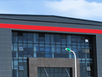
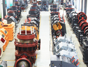

info@theabstractgames.com |
info@theabstractgames.com |  +86-21-58386189,58386176 info@theabstractgames.com | +86-21-58386189,58386176
+86-21-58386189,58386176 info@theabstractgames.com | +86-21-58386189,58386176 Shibang Industry & Technology Group Co.,Ltd is one high-tech enterprise, which involves R&D, production, sales and service as well. In the past 20 years, we devote to producing mining equipments, sand making machines and industrial grinding mills, offering expressway, rail way and water conservancy projects the solution of making high grade sand and matched equipments.
The head office of SBM is in Shanghai- the international financial centre. Here we have modern production base of 2.3 million square meters, professional R&D institution and technology team, which make us world-class company. Here all SBM machines are designed produced, assembled and texted according to the ISO9001:2008.
Till now, our products are sold to 130 countries, being the popular equipments in global crushing and grinding industry. With the development of our SBM, we would like to help more and more customers start their business in mining and construction industries, offer them the best solution, much more advanced machinery and better service.
Everything is changing, here has as many latest news as possible about our company and our staff. You can always find something new and fresh, because we always make miracles.
In he domestic market and the international trade, our company has an experienced and skilled sales service team and a perfect sales service network around the whole China and many other countries.
SBM Machinery have two basic equipment manufacturing factories, namely Shanghai manufacturing base and Nantong manufacturing base. The two manufacturing factories provide the powerful staff and technical support.
SBM Machinery was founded in 1995, and located at Pudong New Area, Shanghai. After several years development, we are skilled in research, producing and sale of mine crushing equipment, sand making equipment and mineral grinding equipment.
SBM Machinery not only has the professional equipment producing technology, but also our daily life is so colorful. We have the newest working culture and life, every staff can play its value here.